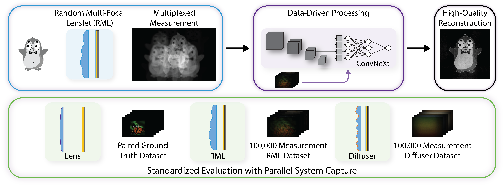

Mask-based lensless imagers use simple optics and computational reconstruction to design compact form factor cameras with compressive imaging ability. However, these imagers generally suffer from poor reconstruction quality. Here, we describe several advances in both hardware and software that result in improved lensless imaging quality. First, we use a precision-manufactured random multi-focal lenslet (RML) phase mask to produce improved measurements with reduced multiplexing. Next, we implement a ConvNeXt-based reconstruction architecture, which provides up to 4.6 dB improvement in peak signal-to-noise ratio over state-of-the-art attention-based architectures. Finally, we establish a parallel imaging setup that simultaneously images a scene with RML, diffuser, and lens systems, with which we collect datasets with 100,000 measurements for each system, to be used for reconstruction model training and evaluation. Using this standardized system, we quantify the improved measurement quality of the RML compared to a diffuser using the modulation transfer function and mutual information. Our ConvRML system benefits from both the optical and the computational developments presented in this work, and our contributions establish resources to support the continued development of high-quality, compact, and compressive lensless imagers.
The Parallel Lensless Dataset (PLD) contains 100,000 measurements from RML and diffuser lensless imaging systems, along with corresponding ground truth images. The dataset can be downloaded from Google Drive.
The PLD also contains additional materials, including data for camera calibration and system characterization.
To build your own parallel data acquisition setup, please refer to the PLD hardware page and the RML height map.
An alternate Automatic White Balance Parallel Lensless Dataset (AWB-PLD), which contains 100,000 measurements with gamma correction and varying color balance, can also be downloaded from Google Drive.
All code is available on GitHub. Pretrained models can be downloaded from Google Drive.
Also check out our work on designing lensless imaging systems to maximize information capture.
@article{Kabuli2026ConvRML,
author = {Leyla A. Kabuli and Clara S. Hung and Vasilisa Ponomarenko and Eric Markley and Laura Waller},
title = {ConvRML: high-quality lensless imaging with random multi-focal lenslets},
journal = {arXiv},
year = {2026},
doi = {10.48550/arXiv.2602.04834},
url = {https://arxiv.org/abs/2602.04834}
}